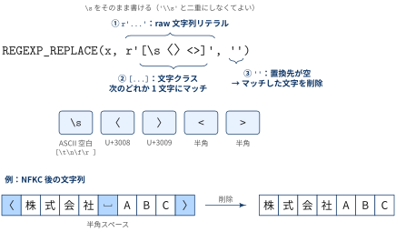

この記事について
| 観点 | 内容 |
|---|---|
| What：何のドキュメントか | BigQuery で表記ゆれを吸収する照合キーを作る一時関数 norm / norm_name の挙動を，公式ドキュメントと実行結果をもとに解説したメモ |
| Who：誰に向けたものか | 全角・半角や空白の混在した文字列を BigQuery 上で JOIN / GROUP BY したい人 |
| Why：なぜ重要か | NORMALIZE(s, NFKC) は便利だが，何が揃い何が揃わないか，どこで情報が落ちるかを知らないと，照合漏れや誤マッチの原因になるため |
| How：どう使うか | 各関数の役割と処理順を理解したうえで，「注意点」の項目を自分のデータに当てはめて確認する |
対象の関数
CREATE TEMP FUNCTION norm(s STRING) AS (UPPER(NORMALIZE(s, NFKC)));
CREATE TEMP FUNCTION norm_name(s STRING) AS (UPPER(REGEXP_REPLACE(NORMALIZE(s, NFKC), r'[\s〈〉<>]', '')));関数呼び出しは内側から評価されるので，処理は次の順に進みます．
| 段 | 処理 | norm |
norm_name |
役割 |
|---|---|---|---|---|
| 1 | NORMALIZE(s, NFKC) |
✓ | ✓ | 全角英数・半角カナ・互換文字などを標準的な形に揃える |
| 2 | REGEXP_REPLACE(..., r'[\s〈〉<>]', '') |
✓ | 空白と山括弧を取り除く | |
| 3 | UPPER(...) |
✓ | ✓ | 英字を大文字に揃える |
使い分け
normは一般的な文字列（コード値・品番など）向けnorm_nameは会社名・氏名のように空白や括弧の入れ方が人によって違う「名前」向け，
CREATE TEMP FUNCTION：一時的な SQL UDF
Definition 1 CREATE TEMP FUNCTION
CREATE TEMP FUNCTIONは SQL で本体を書くユーザー定義関数（SQL UDF）を，そのクエリの中だけで使える形で定義する仕組み- 名前にピリオドは使えない
公式ドキュメント User-defined functions には次の記述があります．
- 一時 UDF はクエリが終わった時点で消える（“temporary UDFs expire as soon as the query finishes”）
- ビューと永続 UDF からは一時 UDF を参照できない（“Views and persistent UDFs cannot reference temporary UDFs”）
- 一時 UDF の名前にピリオドは使えない
How to Use
関数定義と呼び出しは同じクエリ（マルチステートメントクエリ）に書きます．
CREATE TEMP FUNCTION norm(s STRING) AS (UPPER(NORMALIZE(s, NFKC)));
CREATE TEMP FUNCTION norm_name(s STRING) AS (UPPER(REGEXP_REPLACE(NORMALIZE(s, NFKC), r'[\s〈〉<>]', '')));
SELECT
a.*,
b.customer_id
FROM `project.dataset.orders` AS a
LEFT JOIN `project.dataset.customers` AS b
ON norm_name(a.company_name) = norm_name(b.company_name);bq コマンドからは GoogleSQL を明示して，ファイルを標準入力で渡すのが楽です．(see CASE 4: ファイルに書いた SQL を bq query に渡す)
bq query --use_legacy_sql=false < query.sql- 複数のクエリやビューから使い回したくなったら，
CREATE FUNCTION dataset.norm_name(...)として永続 UDF にします．
NORMALIZE(s, NFKC)：Unicode 正規化
String functions: NORMALIZE のシグネチャは次のとおりです．
NORMALIZE(value[, normalization_mode])ドキュメントには “If you don’t provide a normalization mode, NFC is used.” とあり，モードを省略すると NFC になります． モードは NFC / NFKC / NFD / NFKD の4つです．
NFC と NFKC の違い
NFC は「見た目も意味も同じ文字」（たとえば濁点が分かれた カ + ゛ と1文字の ガ）を揃えるだけで，全角英数は全角のまま残ります． 全角・半角の違いまで揃えたいときは，互換分解を含む NFKC を指定する必要があります．
SELECT NORMALIZE('ＡＢＣ') AS nfc_default, NORMALIZE('ＡＢＣ', NFKC) AS nfkc;
-- nfc_default: ＡＢＣ / nfkc: ABCまた，モードは文字列ではなくキーワードとして書きます．NORMALIZE(s, 'NFKC') と書くと Argument is not a valid NORMALIZE mode というエラーになります．
4つの正規化形式の使い分け
4つの形式は「互換文字も同一視するか（K の有無）」と「最後に合成するか，分解したままにするか（C / D）」の2つの問いで選べます．

| 形式 | 互換文字の同一視 | 結合文字 | 主な用途 |
|---|---|---|---|
| NFC | ✗ | 合成 | 保存・表示用の標準形．NORMALIZE の既定値 |
| NFD | ✗ | 分解 | 結合文字（\p{M}）を消してアクセント・濁点を落とす前処理 |
| NFKC | ✓ | 合成 | 照合キー・名寄せ・検索．本記事の norm / norm_name |
| NFKD | ✓ | 分解 | 全角・半角を揃えたうえでアクセント・濁点も落とす |
- 濁点まで消えて
ガとカが同じになるので，日本語の照合キーでは D 系 +\p{M}除去は使わず NFKC を選びます．
NFKC で何が変わるか
BigQuery で実際に NORMALIZE(s, NFKC) を実行した結果です．
| 入力 | 出力 | 内容 |
|---|---|---|
ａｂｃ１２３ |
abc123 |
全角英数 → 半角英数 |
ｶﾞｷﾞ |
ガギ |
半角カナ → 全角カナ（濁点も1文字に合成） |
株式会社 ABC（U+3000） |
株式会社 ABC（U+0020） |
全角スペース → 半角スペース |
a b（U+00A0, NBSP） |
a b（U+0020） |
ノーブレークスペース → 半角スペース |
＜abc＞ |
<abc> |
全角記号 → 半角記号 |
㈱abc |
(株)abc |
囲み文字 → 括弧つきの文字列 |
① |
1 |
丸数字 → 数字 |
m² |
m2 |
上付き数字 → 通常の数字 |
file |
file |
合字 → 分解 |
UPPER：大文字化
String functions: UPPER には “For STRING arguments, returns the original string with all alphabetic characters in uppercase.” とあり，大文字と小文字の対応は言語固有のルールを考慮せず Unicode の文字データベースに従います．
- 日本語の文字には大文字・小文字がないので影響はなく，実質的には英字の大文字・小文字のゆれを揃える役割
- なお，1文字が複数文字に変わるケースもあり，
UPPER('Straße')はSTRASSEになる（文字数が変わる）．
% bq query "SELECT UPPER('Straße')"
+---------+
| f0_ |
+---------+
| STRASSE |
+---------+REGEXP_REPLACE(..., r'[\s〈〉<>]', '')：空白と山括弧の除去
String functions: REGEXP_REPLACE は，正規表現 regexp にマッチした部分をすべて replacement に置き換えます． BigQuery の正規表現は RE2 ライブラリで実装されています．
r'...'は raw 文字列リテラルで，\sのバックスラッシュをエスケープせずに書ける[...]は文字クラスで，\s・〈（U+3008）・〉（U+3009）・<・>のどれか1文字にマッチする- 置換先が
''なので，マッチした文字を削除する
![]', '') の読み方">](./figures/regexp-replace-anatomy.svg){kind=link}
REGEXP_REPLACE(x, r'[\s〈〉<>]', '') の読み方\s は ASCII の空白だけ
RE2 のドキュメントでは Perl 由来の文字クラスは “all ASCII-only” とされ，\s は [\t\n\f\r ] と定義されています． つまり \s 単体では全角スペース（U+3000）にマッチしません．
それでも norm_name で全角スペースが消えるのは，先に NORMALIZE(s, NFKC) が U+3000 を U+0020 に変換しているからです． 処理順を逆にして NORMALIZE(REGEXP_REPLACE(s, ...), NFKC) と書くと，全角スペースが半角スペースとして残ります．
SELECT
s,
UPPER(REGEXP_REPLACE(NORMALIZE(s, NFKC), r'[\s〈〉<>]', '')) AS nfkc_first, -- norm_name と同じ順
UPPER(NORMALIZE(REGEXP_REPLACE(s, r'[\s〈〉<>]', ''), NFKC)) AS regexp_first -- 順番を逆にした版
FROM UNNEST(['株式会社 ABC', '株式会社 ABC', '＜ABC＞']) AS s;s |
nfkc_first |
regexp_first |
|---|---|---|
株式会社 ABC（全角スペース U+3000） |
株式会社ABC |
株式会社 ABC（半角スペース U+0020 が残る） |
株式会社 ABC（半角スペース） |
株式会社ABC |
株式会社ABC |
＜ABC＞（全角山括弧） |
ABC |
<ABC>（半角の <> が残る） |
regexp_first で何が起きているかを1行目で追うと，次のとおりです．
REGEXP_REPLACE：U+3000 は\s（ASCII の空白だけ）にマッチしないので，削除されずに残るNORMALIZE(..., NFKC)：残った U+3000 が U+0020 に変換されるUPPER：空白はそのまま
削除のあとで正規化しているので，正規化で生まれた半角スペースを消す処理がもう残っていません． その結果，入力時点の空白が全角か半角かによって，株式会社ABC と 株式会社 ABC の別々のキーになり，JOIN で一致しなくなります． ＜＞ も同じ理由で，<> に変換されたあと削除されずに残ります．
- 「削除・置換」より先に「正規化」を行う
- 置換パターンは正規化後の文字（半角スペース・半角記号）だけを想定して書けばよくなる
山括弧のゆれも NFKC 経由で吸収される
文字クラスに書いているのは 〈〉<> の4文字ですが，NFKC が先に走るので次の文字も結果的に削除されます．
| 入力 | NFKC 後 | 削除されるか |
|---|---|---|
< >（半角） |
そのまま | ✓ |
＜ ＞（全角，U+FF1C / U+FF1E） |
< > |
✓ |
〈 〉（CJK，U+3008 / U+3009） |
そのまま | ✓ |
〈 〉（U+2329 / U+232A） |
〈 〉（U+3008 / U+3009） |
✓ |
《 》（二重山括弧，U+300A / U+300B） |
そのまま | ✗ |
実行結果
BigQuery で両関数を実行した結果です．
CREATE TEMP FUNCTION norm(s STRING) AS (UPPER(NORMALIZE(s, NFKC)));
CREATE TEMP FUNCTION norm_name(s STRING) AS (UPPER(REGEXP_REPLACE(NORMALIZE(s, NFKC), r'[\s〈〉<>]', '')));
SELECT s, norm(s) AS norm, norm_name(s) AS norm_name
FROM UNNEST(['ａｂｃ１２３', '株式会社 ＡＢＣ', '〈ABC〉', '＜abc＞', '㈱abc', 'a\tb\nc', CAST(NULL AS STRING)]) AS s;s |
norm(s) |
norm_name(s) |
|---|---|---|
ａｂｃ１２３ |
ABC123 |
ABC123 |
株式会社 ＡＢＣ |
株式会社 ABC |
株式会社ABC |
〈ABC〉 |
〈ABC〉 |
ABC |
＜abc＞ |
<ABC> |
ABC |
㈱abc |
(株)ABC |
(株)ABC |
a\tb\nc（タブ・改行） |
A\tB\nC |
ABC |
NULL |
NULL |
NULL |
注意点
1. NFKC は情報を落とす
NFKC は「見た目は違うが互換性のある文字」を同じ文字にまとめるので，元の区別は復元できません． m² と m2，① と 1，㈱ と (株) は区別できなくなります． ½ は 1⁄2（U+2044 の分数スラッシュ）になり，/ とも一致しません．
- 正規化した値は照合用のキーとしてだけ使い，表示や集計の出力には元の列を残しておく
2. NFKC でも揃わない表記ゆれがある
NFKC が揃えるのは Unicode が互換文字と定めたものだけです．日本語データでよく問題になる次のゆれは残ります．
| 種類 | 例 | NFKC 後 |
|---|---|---|
| 波ダッシュと全角チルダ | 〜（U+301C）と ～（U+FF5E） |
〜 と ~（不一致のまま） |
| ハイフン類 | ‐（U+2010），−（U+2212），ー（U+30FC），－（U+FF0D） |
－ だけ - になり，他は残る |
| 異体字 | 髙橋 と 高橋 |
変わらない |
| ひらがなとカタカナ | さくら と サクラ |
変わらない |
| 法人格の書き方 | (株) と 株式会社 |
変わらない |
| 二重山括弧 | 《ABC》 |
norm_name でも残る |
これらを揃えたいときは，REPLACE や TRANSLATE で対応表を明示的に書き足します．
3. ゼロ幅文字や垂直タブは消えない
\s は [\t\n\f\r ] なので，垂直タブ（\v）は含みません． また，ゼロ幅スペース（U+200B）や BOM（U+FEFF）は空白の扱いではなく，NFKC でも変換されないため，norm_name 後もそのまま残ります． Web やExcel からコピーしたデータには混ざりがちで，見た目は同じなのに一致しない原因になります．
消したい場合は文字クラスを広げます．実行して ab（U+200B 入り）が AB になることを確認しています．
CREATE TEMP FUNCTION norm_name(s STRING) AS (
UPPER(REGEXP_REPLACE(NORMALIZE(s, NFKC), r'[\s\v\p{Z}\x{200B}\x{FEFF}〈〉<>]', ''))
);\p{Z} は Unicode の区切り文字（Separator）カテゴリで，NFKC で U+0020 にならない空白類も拾えます．
4. 空白を消すと別物が衝突する
norm_name はすべての空白を消すので，ABC D と ABCD は同じ ABCD になります． 名前の照合では便利な反面，本来別の会社・人物が同じキーになる誤マッチが起こりえます． JOIN する前に，同じキーに複数の元の値が対応していないかを確認しておきます．
SELECT norm_name(company_name) AS key, ARRAY_AGG(DISTINCT company_name) AS originals
FROM `project.dataset.customers`
GROUP BY key
HAVING COUNT(DISTINCT company_name) > 1;5. 空文字キーは大量に一致する
NULL を渡すと NULL が返り，NULL どうしは = で一致しないので JOIN では落ちます． 一方，〈 〉 や < > のように空白と山括弧だけの値は norm_name で空文字 '' になり，空文字どうしは一致します． ダミー値が入った行どうしが全部つながってしまうので，必要なら NULLIF(norm_name(s), '') で空文字を NULL に寄せます．
6. 大文字・小文字を無視した比較なら NORMALIZE_AND_CASEFOLD もある
公式ドキュメントでは，大文字・小文字を区別しない比較には NORMALIZE_AND_CASEFOLD を使うよう案内されています．
NORMALIZE_AND_CASEFOLD(s, NFKC) -- 'Straße' -> 'strasse', 'ＡＢＣ' -> 'abc'結果は小文字側に揃うので，キーとして比べるだけならこちらでも同じ目的を果たせます． UPPER(NORMALIZE(...)) を使うのは，キーを目で見て確認するときに大文字のほうが読みやすい，という程度の理由です．
7. 関数をかけた JOIN は毎回計算される
ON norm_name(a.x) = norm_name(b.x) は，クエリを実行するたびに両テーブルの全行で正規化を計算します． 何度も使うキーであれば，正規化済みの列をテーブルに持たせておくほうが速く，ビューからも参照できます（ビューは一時 UDF を参照できないため）．
References
- BigQuery: String functions — NORMALIZE
- BigQuery: String functions — NORMALIZE_AND_CASEFOLD
- BigQuery: String functions — UPPER
- BigQuery: String functions — REGEXP_REPLACE
- BigQuery: User-defined functions
- BigQuery: bq command-line tool reference
- RE2 Syntax
- Unicode Standard Annex #15: Unicode Normalization Forms
📘 用語集
glossary:
- def: 正規化（文字処理）
description: |
同じ意味の文字列が，異なる文字・コードポイントの並びで表されているときに，一定の規則で1つの表現に揃える処理．たとえば `ガ`（U+30AC）と `カ` + 濁点（U+30AB U+3099），`ＡＢＣ` と `ABC` は見た目や意味が同じでも，そのままでは `=` で一致しない．
- def: --use_legacy_sql
description: |
`bq query` などで，クエリを legacy SQL と GoogleSQL のどちらで解釈するかを指定するフラグ．`false` で GoogleSQL，`true` で legacy SQL になる．設定ファイルで指定していない場合の既定値は `true`（legacy SQL）なので，GoogleSQL の構文（`CREATE TEMP FUNCTION`，バッククォートで囲んだ `project.dataset.table` 形式のテーブル名など）を使うクエリでは`--use_legacy_sql=false` を明示する．